תפילה
מצגות ופירושים לתפילה – ברכות השחר, שמונה עשרה, הלל וברכת המזון
108 פריטים
תפילת שחרית (26)
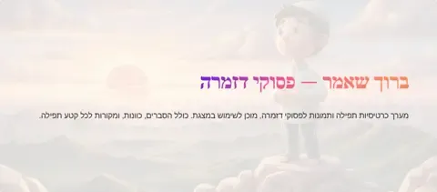
ברוך שאמר – פסוקי דזמרה (מצגת)
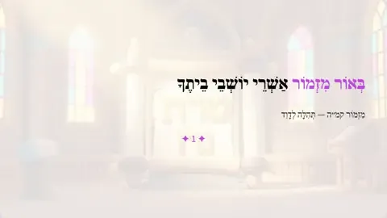
באור מזמור אשרי יושבי ביתך (מצגת)
ברכת האהבה (מצגת)
ברכות השחר
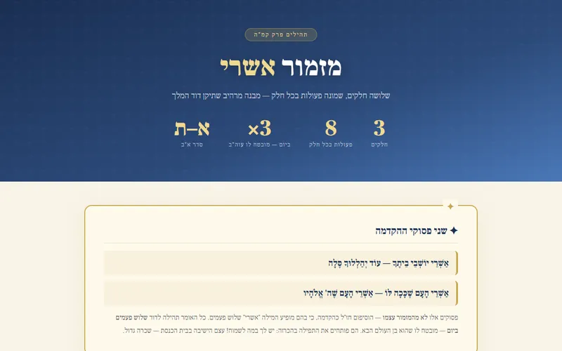
באור אשראי
מבנה מזמור אשרי — שלושה חלקים, שמונה פעולות תהילים פרק קמ"ה מזמור אשרי שלושה חלקים, שמונה פעולות בכל חלק — מבנ…
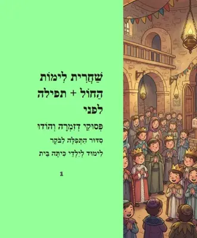
שחרית פסוקי דזמרה חלק א (מצגת)
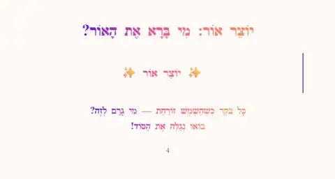
יוצר אור: מי ברא את האור? (מצגת)
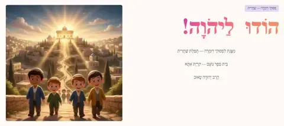
הודו ליהוה! (מצגת)
הודו ליהוה!
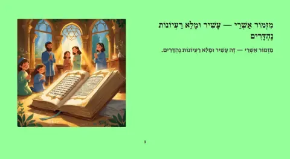
מזמור אשרי — עשיר ומלא רעיונות נהדרים (מצגת)
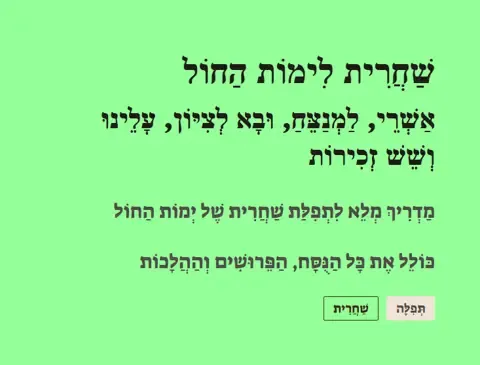
שחרית לאחרי שמונה עשרה (מצגת)
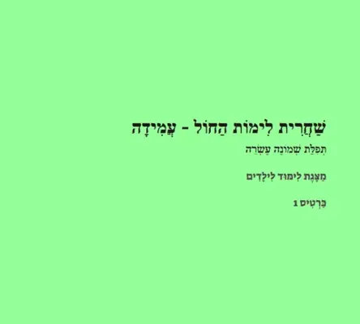
שחרית לימות החול - עמידה (מצגת)
תפילת שחרית עם ציורים - מיוצר אור (מצגת)
הודו - ברוך שאמר (מצגת)
הודו - ברוך שאמר
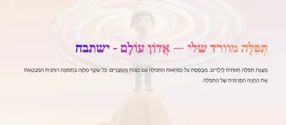
תפלה מוורד שלי — אדון עולם - ישתבח (מצגת)
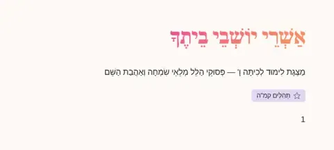
אשרי יושבי ביתך (מצגת)
אשרי יושבי ביתך
מסע ההודיה שלנו - ברכות השחר עם פירוש (מצגת)
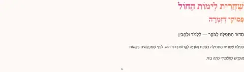
שחרית לימות החול (מצגת)
שחרית לימות החול
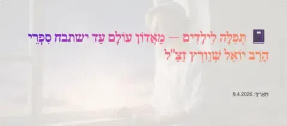
תפילה לילדים – מאדון עולם עד ישתבח (ספרי הרב יואל שוורץ זצ״ל) (מצגת)
ברוך שאמר - ישתבח
כל תפילת שחרית
ברכות קריאת שמע - מגון פירושים
תפילת שמונה עשרה
שמונה עשרה מבואר
18 תמונות מחולקות
תְּפִלַּת שְׁמוֹנֶה עֶשְׂרֵה - מגוון מצגות
הסידור השלם לילדים
שמונה עשרה (9)
דיני כריעה בשמונה עשרה
שיעור נפלא - על תפילה וכריעה בתפילה
תפילת שמונה עשרה – הסוד שבכריעה | הרב יהודה טאוב 🕍 שיעור תפילה • קול תודה תפילת שמונה עשרה הסוד שבכריעה מדוע כ…
מַשִּׁיב הָרוּחַ וּמוֹרִיד הַגֶּשֶׁם
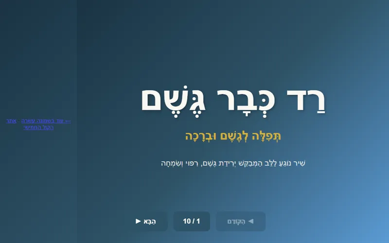
רַד כְּבָר גֶּשֶׁם - מצגת עם ניקוד
רד כבר גשם" הוא תפלה פשוטה ונוגעת ללב, המבקשת ירידת גשם וברכה.
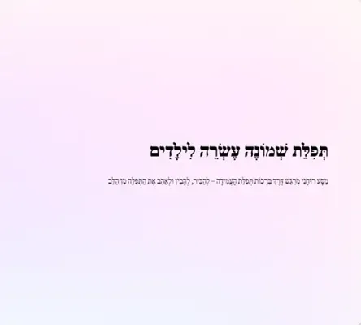
תפלת שמונה עשרה לילדים (מצגת)
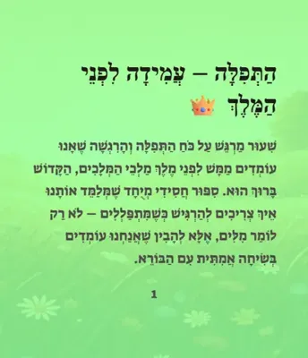
סיכום שיעור התפלה – עמידה לפני המלך (מצגת)
תפלת שמונה עשרה - לשעת הדחק (מצגת)
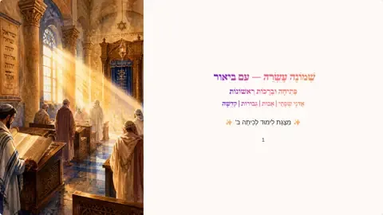
שמונה עשרה — עם ביאור (מצגת)
פתיחת שמונה עשרה (מצגת)
פתיחת שמונה עשרה
הלל (15)
הלל שלם - עם פירוש
הלל של ראש חודש - עם ביאור
מצגות נוספות של ההלל
הלל - עם תמונות
הלל עם פירוש
המשך ההלל
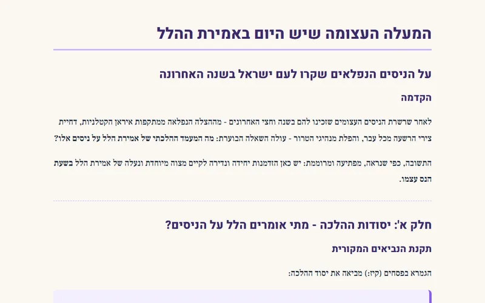
המעלה העצומה שיש היום באמירת ההלל
על הניסים הנפלאים שקרו לעם ישראל בשנה האחרונה
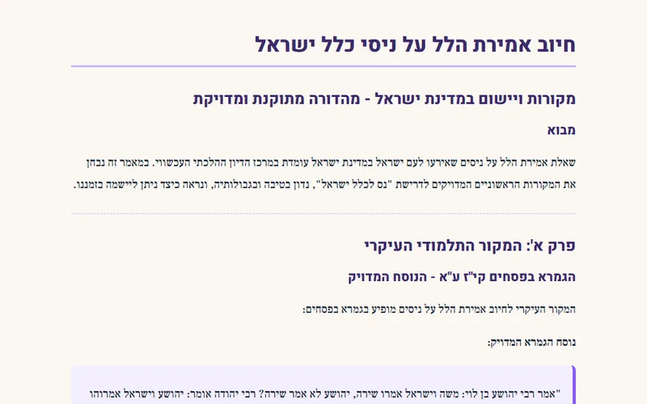
חיוב אמירת הלל על ניסי כלל ישראל
מקורות ויישום במדינת ישראל - מהדורה מתוקנת ומדויקת
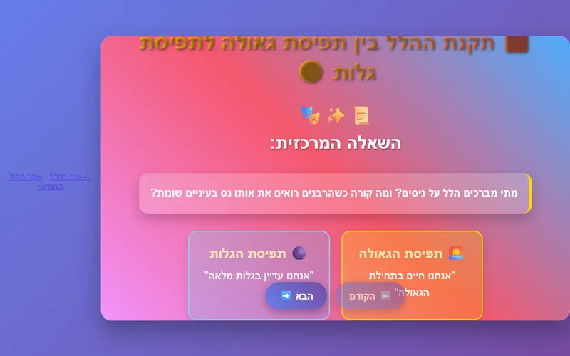
תקנת ההלל בין תפיסת גאולה לתפיסת גלות
מתי מברכים הלל על ניסים? ומה קורה כשהרבנים רואים את אותו נס בעיניים שונות?
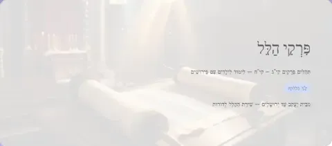
פרקי הלל (מצגת)
פרקי הלל
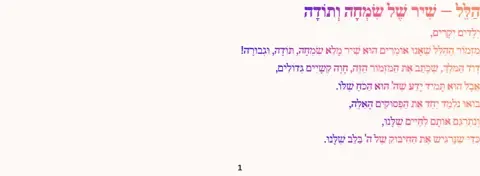
הלל – שיר של שמחה ותודה (מצגת)
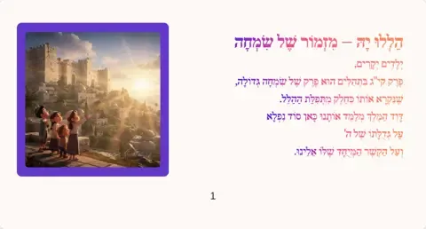
הללו יה – מזמור של שמחה (מצגת)
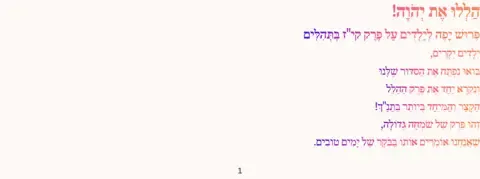
הללו את יהוה! (מצגת)
הללו את יהוה!
כל ההלל עם פירוש = מדהים!
הלל - בפירוש הרב שטינהוייז
ברכת המזון (5)
ברכת המזון (מצגת)
ברכת המזון מצוירת
ברכת המזון עם פירוש מלא
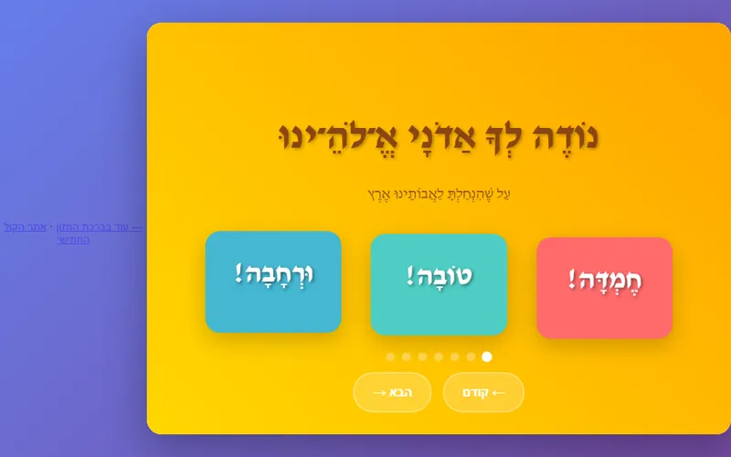
ברכת המזון - מצגת חזותית
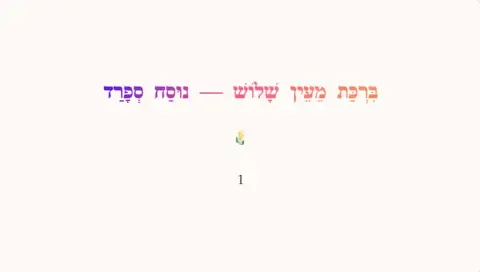
ברכת מעין שלוש — נוסח ספרד (מצגת)
ברכות ותפילה – כללי (53)
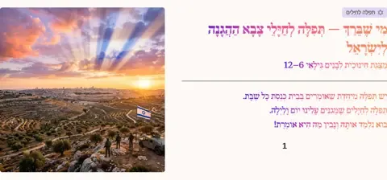
מי שברך לחיילי צבא ההגנה לישראל (מצגת)
מי שברך – באור נוסף (מצגת)
הקטלוג של מיזם תפילה באהבה
דפי עבודה, סרטונים ומצגות של מיזם תפילה באהבה
זמני תפילות קרית אתא
זמני התפילות בבתי הכנסת בקרית אתא
קטלוג דפי עבודה של תפילה באהבה
קטלוג דפי עבודה וסרטונים ⭐ מועדפים לוחצים על הכוכב כדי לסמן קובץ כמועדף - הוא יעלה אוטומטית לראש הקטגוריה. ✏️ …
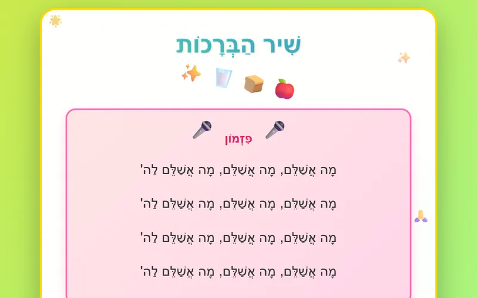
שִׁיר הַבְּרָכוֹת
🌟 ✨ 🎵 🙏 שִׁיר הַבְּרָכוֹת 🍎 🍞 🥛 ✨ 🎤 פִּזְמוֹן 🎤 מָה אֲשַׁלֵּם, מָה אֲשַׁלֵּם, מָה אֲשַׁלֵּם לַה' מָה אֲשַׁלֵּם…
ברכת האילנות – ראיית אהבת ה' במותרות
שואל הפרי מגדים שאלה יסודית: הגמרא קובעת שהרואה אילנות המלבלבים בניסן חייב לברך. אך מדוע דווקא אילנות? הרי גם …
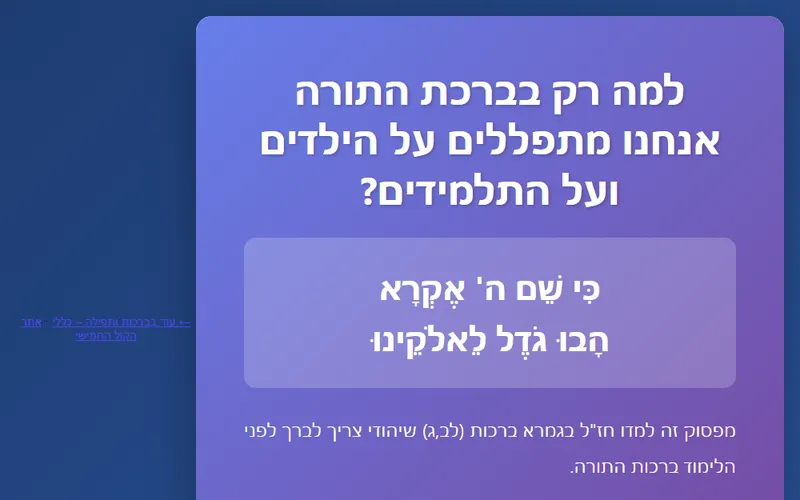
ברכת התורה - ללמוד וללמד
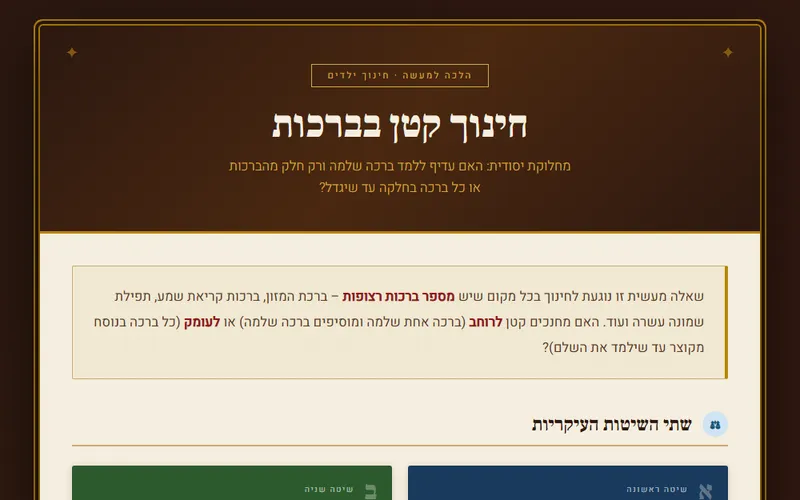
חינוך קטן בברכות – שיטות הפוסקים
מחלוקת יסודית: האם עדיף ללמד ברכה שלמה ורק חלק מהברכות או כל ברכה בחלקה עד שיגדל?
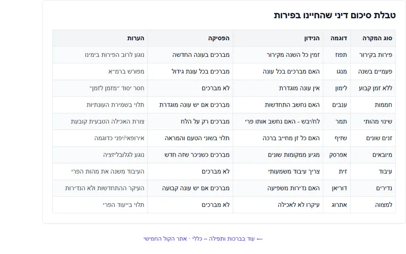
טבלת סיכום דיני שהחיינו בפירות
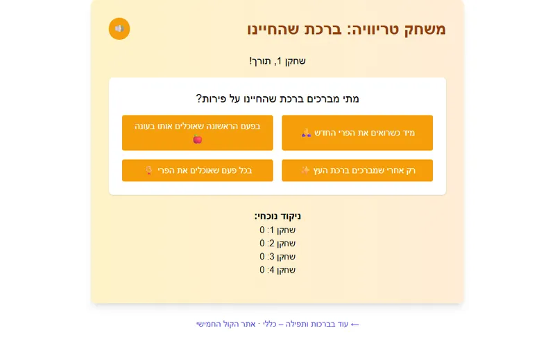
משחק טריוויה – ברכת שהחיינו
משחק טריוויה: ברכת שהחיינו
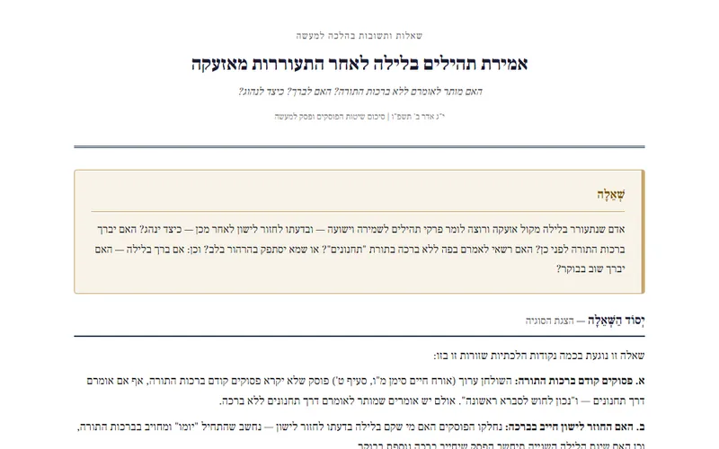
שו"ת: אמירת תהילים בלילה לאחר אזעקה
שאלה זו נוגעת בכמה נקודות הלכתיות שזורות זו בזו:
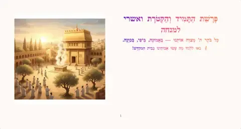
פרשת התמיד והקטרת ואשרי למנחה (מצגת)
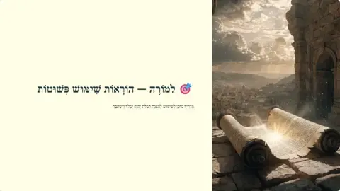
לימודים על תפילה - מכמה דברים (מצגת)
אלו מי שם – הטלפון של מלכי (מצגת)
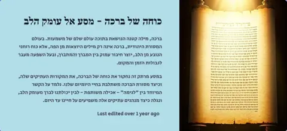
כוחה של ברכה - מסע אל עומק הלב (מצגת)
ברוך שפטרני מעונשו של זה - משמעות הברכה (מצגת)
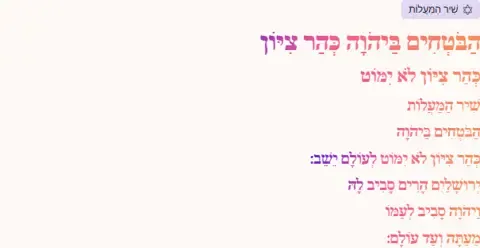
הבטחים ביהוה כהר ציון (מצגת)
נשמת כל חי מבואר- מהרב הרבסט (מצגת)
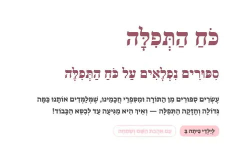
סיפורי כוח התפילה – חלק א (מצגת)
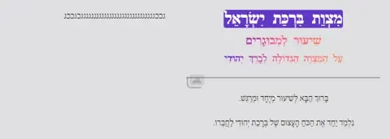
מצות ברכת ישראל (מצגת)
מצות ברכת ישראל
שיר מזמור לאסף פירושים נוספים (מצגת)
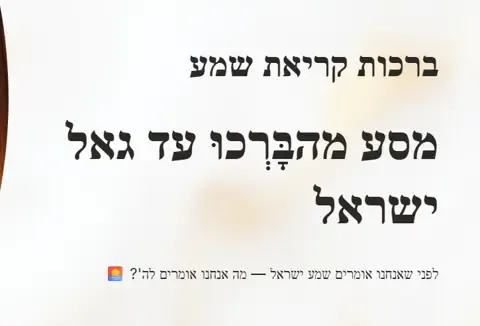
ברכו עד גאל ישראל (מצגת)
ברכו עד גאל ישראל
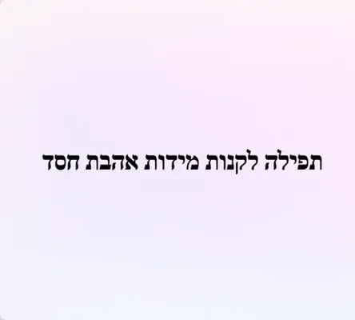
תפילה לקנות מידות אהבת חסד (מצגת)
החסיד שלא הפסיק את תפלתו (מצגת)
החסיד שלא הפסיק להתפלל (מצגת)
מעשה בחסיד שלא הפסיק את תפלתו (מצגת)
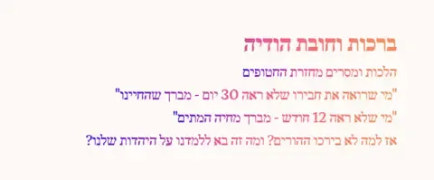
ברכות וחובת הודיה - בהחזרת החטופים (מצגת)
שהכל או אשרינו (מצגת)
שהכל או אשרינו
חנה ותפילת הלב הכנה (מצגת)
חנה ותפילת הלב הכנה
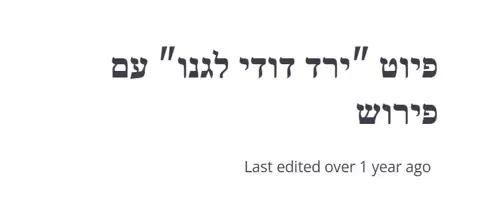
פיוט "ירד דודי לגנו" עם פירוש (מצגת)
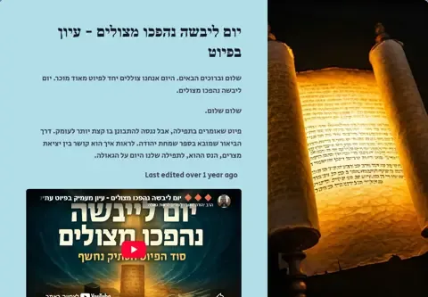
יום ליבשה נהפכו מצולים - עיון בפיוט (מצגת)
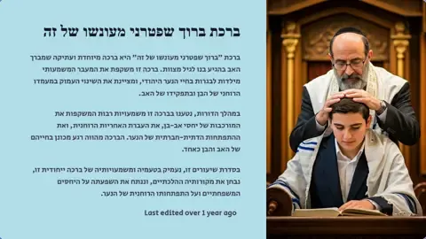
ברכת ברוך שפטרני מעונשו של זה (מצגת)
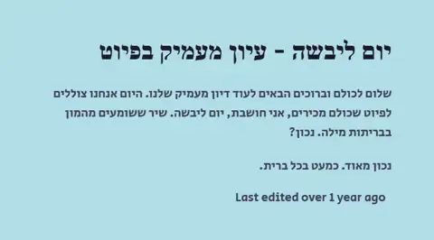
יום ליבשה - עיון מעמיק בפיוט (מצגת)
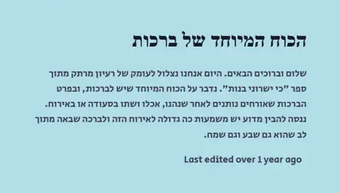
הכוח המיוחד של ברכות (מצגת)
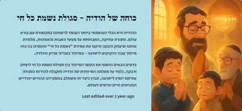
כוחה של הודיה - סגולת נשמת כל חי (מצגת)
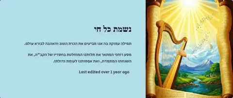
נשמת כל חי (מצגת)
נשמת כל חי
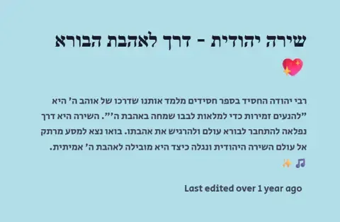
שירה יהודית - דרך לאהבת הבורא (מצגת)
מסע מופלא בים התורה והשירה (מצגת)
על כנפי השירה: גלו את הדרך לאהבת השם דרך מנגינה (מצגת)
כוח השירה וההודיה - להכין את הפה לעולם הבא (מצגת)
עלינו לשבח - המהפכה הרוחנית בדורנו (מצגת)
עלינו לשבח - המהפכה הרוחנית בדור האחרון (מצגת)
מזמורי שיר המעלות (מצגת)
מזמורי שיר המעלות
סדור התפלה לילדים (מצגת)
סדור התפלה לילדים
תפלה – שיחה עם הקדוש ברוך הוא (מצגת)
תפלת רפואת הקול (מצגת)
תפלת רפואת הקול
מסע של הנפש אל האור האלהי (מצגת)
הנשמה שלי צמאה לך (מצגת)
הנשמה שלי צמאה לך
יום ליבשה – סוד השירה, הברית והגאולה (מצגת)
כוחה של הברכה – מלב אל לב (מצגת)
חידון: ברכת שהחיינו על פירות
ברכת שהחיינו – מושגים ומשמעותם
ברכת שהחיינו - מושגים ומשמעותם ברכת שהחיינו - מושגים ומשמעותם ניקוד: 0 ערבב קלפים המשך לקלף הבא